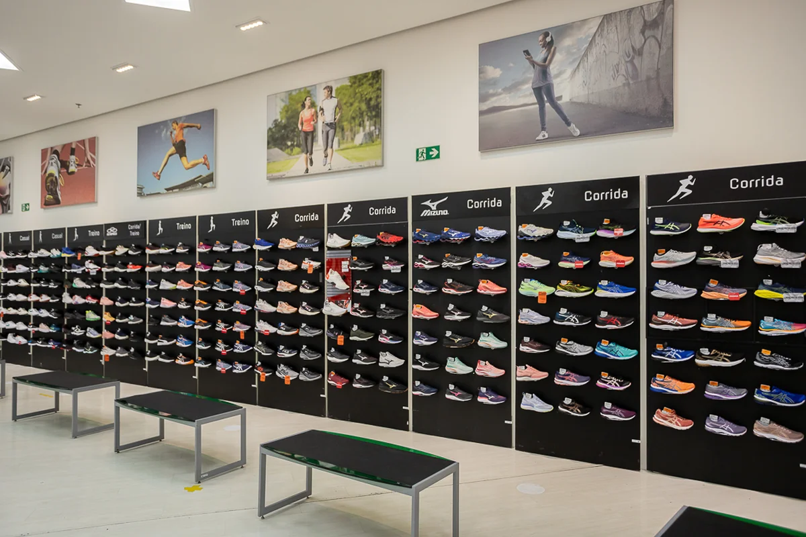

Sobre a Sports Maximum
História: A Sports Maximum trabalha com artigos esportivos desde 14 de Junho de 1995, fundada por Renato Junio em Belo Horizonte.
Objetivo: Buscamos oferecer o máximo conforto para os esportistas que correm, oferecendo uma variedade de artigos esporivos.
